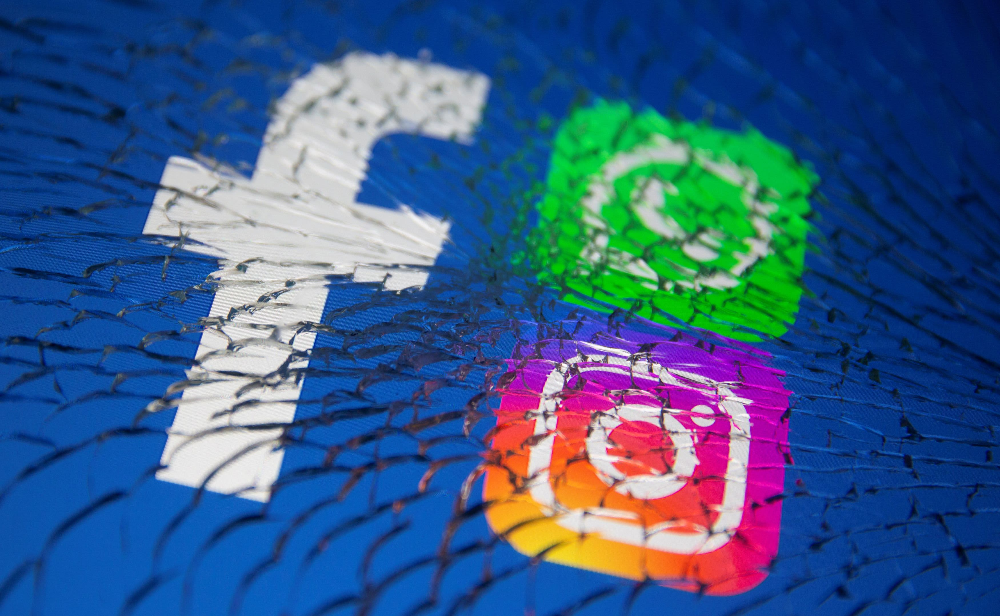

Facebook Global Outage
What happened during the Facebook global outage of 2021?
On October 4, 2021, Facebook and its platforms Instagram, WhatsApp, Messenger, Twitter, Discord and Signal experienced a global outage lasting approximately about six hours. In this time, users were unable to access services or even log in using Login with Facebook.
What caused the Facebook global outage of 2021?
The outage was caused by a configuration change to Facebook's backbone routers, which are part of the network infrastructure that manages traffic between Facebook's data centers. The day after, Facebook's engineering team posted a blog post explaining the cause of the outage. It was mainly caused by an incorrectly executed command during routine maintenance. This command unintentionally disconnected Facebook's data centers from the rest of the Internet by withdrawing the BGP (Border Gateway Protocol) routes. BGP is in fact the system that allows the Internet to reach specific servers. The DNS (Domain Name System) requests for Facebook's domains also stopped working. The DNS is a system that changes website names into numbers so computers can find and connect to them on the Internet.

How did this affect users and businesses?
The outage cut off Facebook's internal communications, preventing employees from sending or receiving external emails, accessing the corporate directory, and authenticating to some Google Docs and Zoom services. During this period, Facebook profiles appeared to be non-existent. The Google Public DNS service also slowed down as a result of the outage, while users of Gmail, TikTok, and Snapchat also experienced slowdowns. CNBC reported that the outage was the worst experienced by Facebook since 2008! During the day of the outage, shares in the company dropped by nearly 5% and Facebook CEO Mark Zuckerberg's wealth fell by more than $6 billion... According also to a report produced by Fortune and Snopes, Facebook lost at least $60 million in advertising revenue.